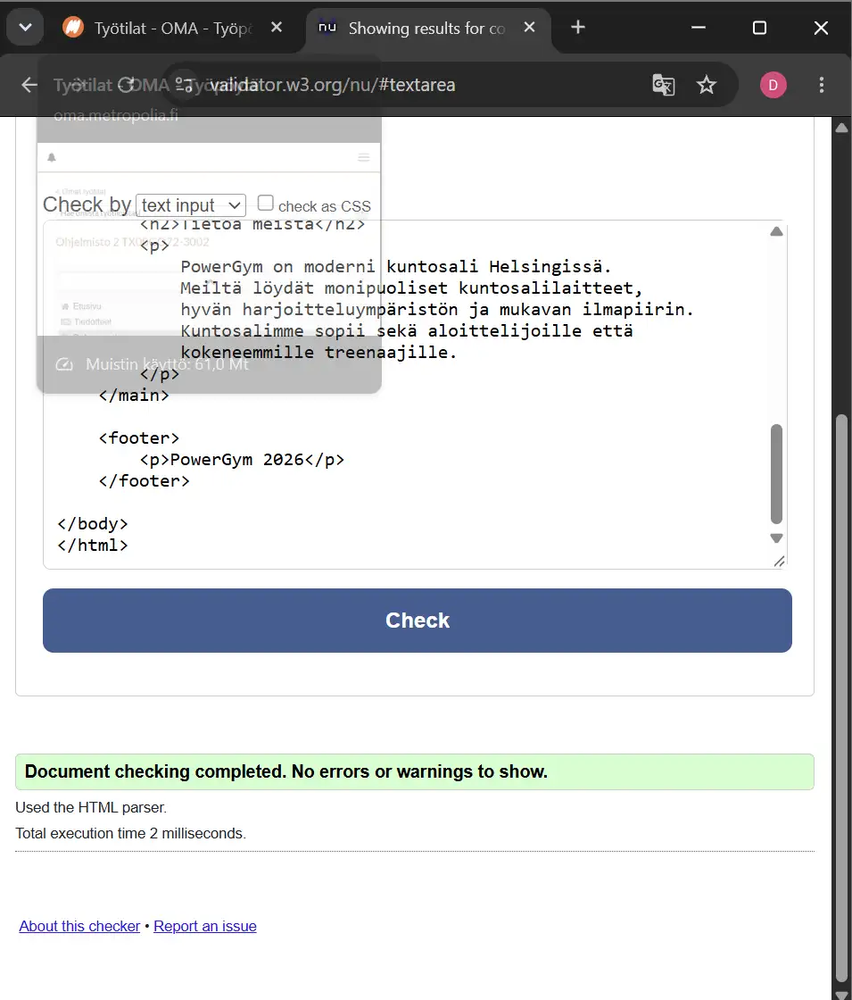
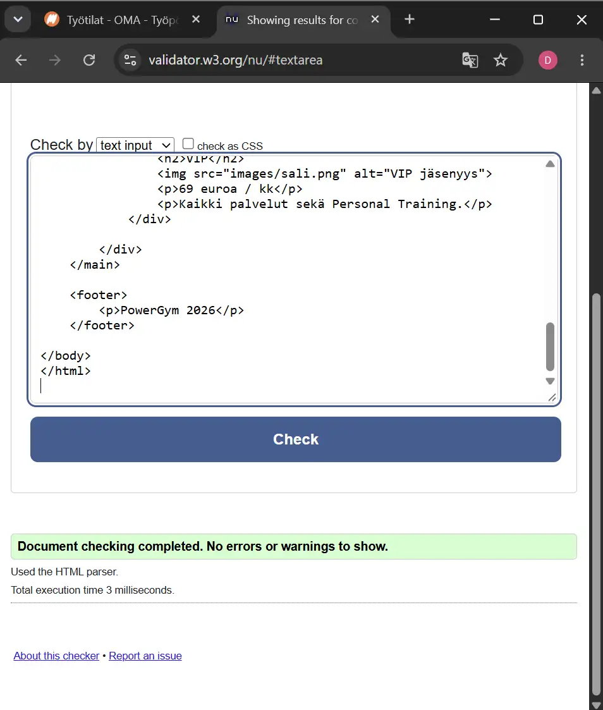
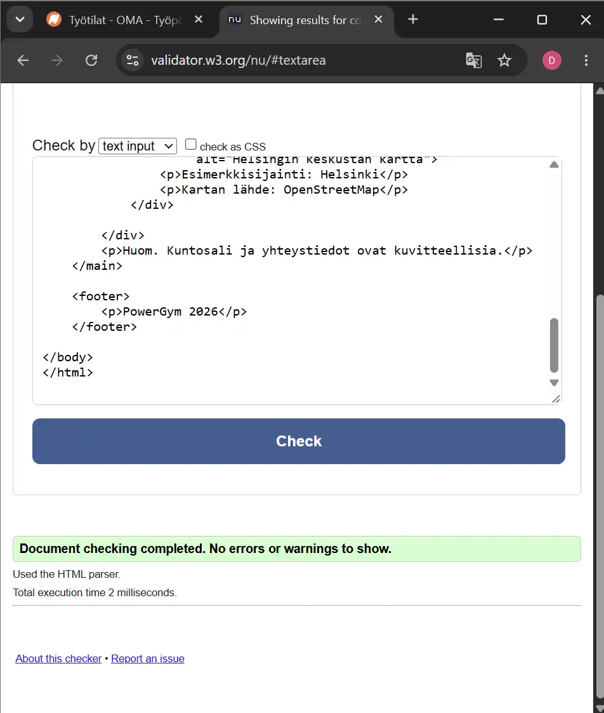
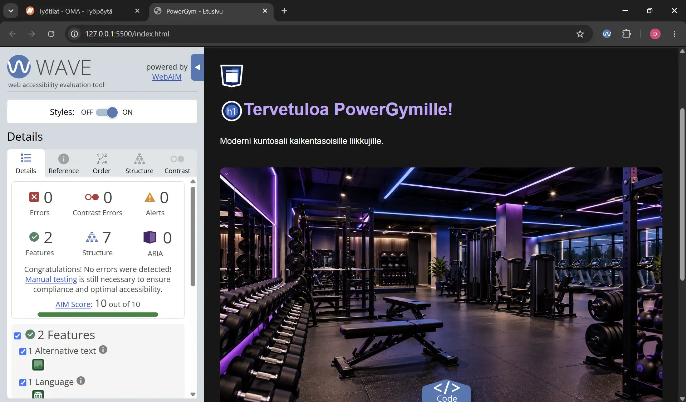
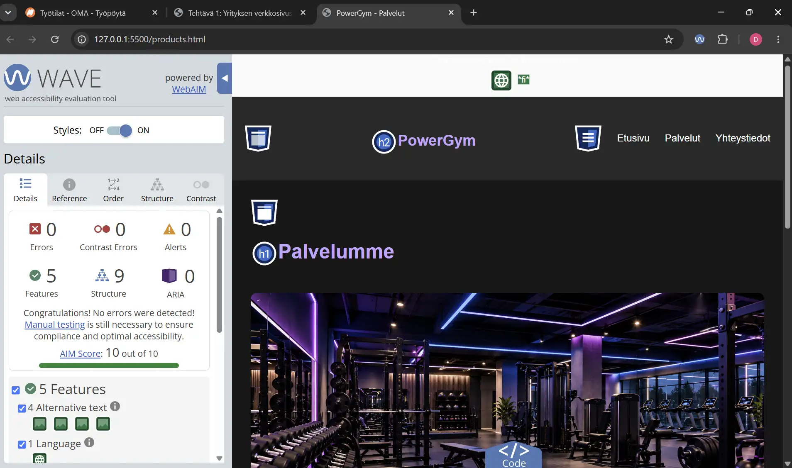
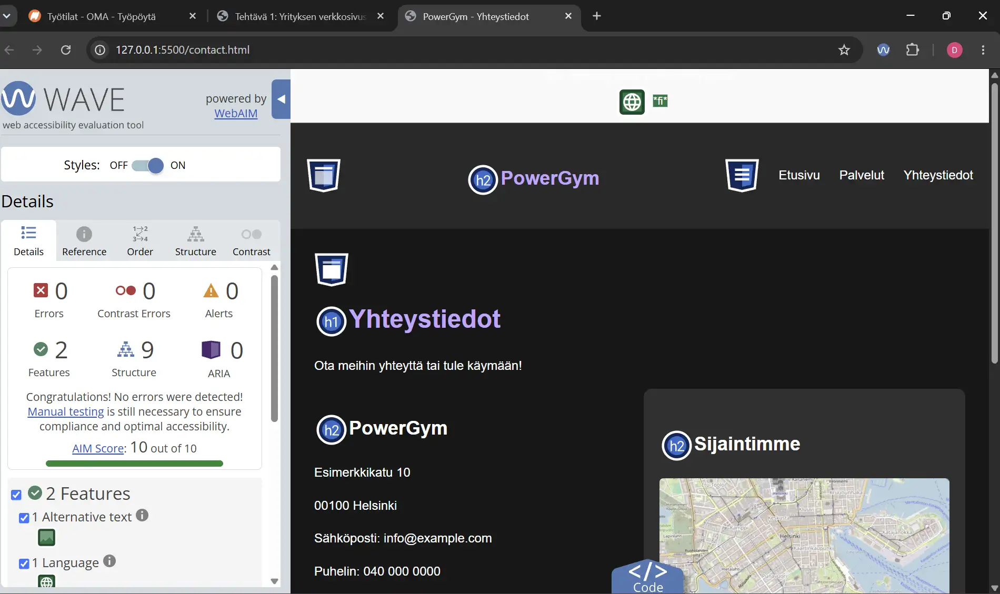
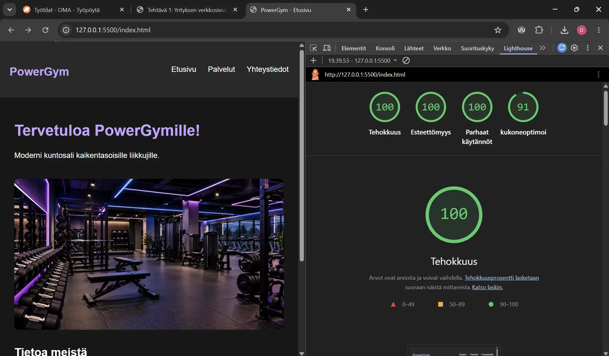
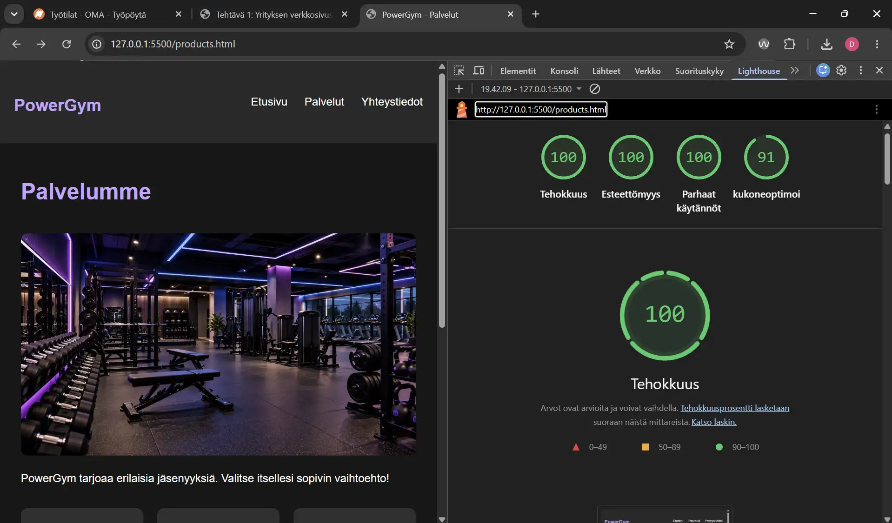
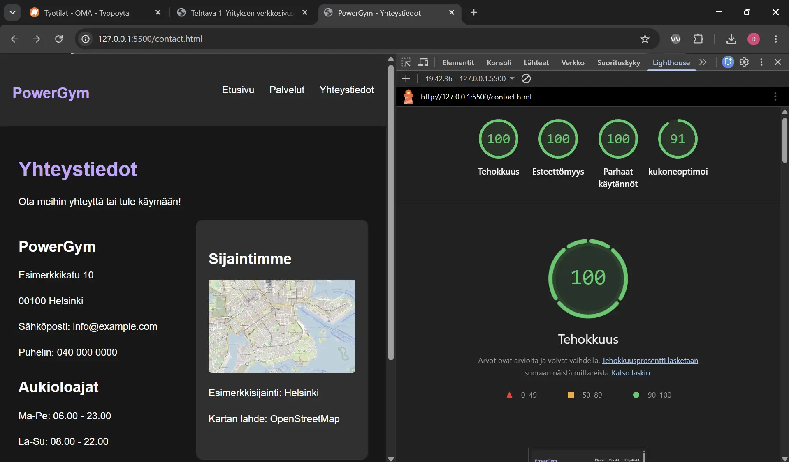

PowerGym - Tarkistustulokset
Käytetty fontti
Sivustolla käytetään Arial-fonttia.
font-family: Arial, sans-serif;
HTML-validointi
Kaikki kolme sivua: 0 virhettä.



WAVE-kontrastitarkistus
Kaikilla sivuilla 0 kontrastivirhettä.



Lighthouse-tarkistus
Kaikkien sivujen tulokset ovat vähintään 90 pistettä.


